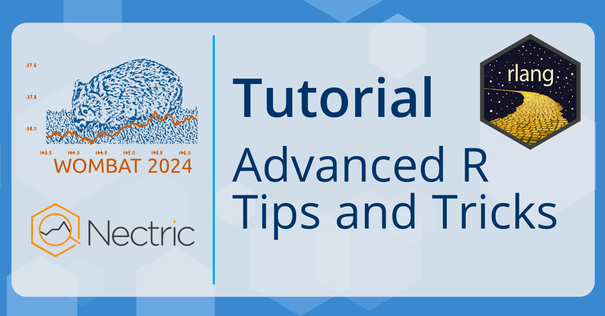

Tutorial PM 1: Oct 21 13:30-17:00
Advancing your R skills
Presenter
Mitchell O’Hara-Wild (he/him) is an award-winning teaching associate at Monash University and consultant at Nectric with particular expertise in forecasting, data analysis and statistical computing using R. He is a prominent contributor to the R package ecosystem, developing many widely used packages for writing documents (vitae, icons), teaching (moodlequiz), visualising data (ggquiver, feasts) and forecasting (fable, forecast). Mitchell is passionate about designing friendly software that is easy to learn and use.
Tutorial details
R is widely used for data analysis and statistics, and from a programming perspective R is weird^[Watch Kelly Bodwin's UseR! keynote [*Keep R weird*](https://www.youtube.com/watch?v=KOQBfC1WPwM)]! The quirks of R is shocking to most programmers, but the language's flexibility is what makes it great for statistics and data. In this three-hour workshop you'll learn just how quirky R can be, we'll have some fun poking around R, and you'll leave with some useful tips and tricks for harnessing R's oddities in your analysis or packages.
Ever wondered what a 'closure' is and why it isn't subsettable? Why do we need tibble when we have data.frame? How does tidy evaluation make the tidyverse so easy to use for analysis, but so difficult to automate? Why is it good (for R) to be lazy?! I'll answer all of these questions and more, along with any of your burning R questions.
Participants will learn how to:
- Understand (and embrace) the quirks of using R
- Appreciate how 'helpful' R tries to be with vectors, recycling and typing
- Use vctrs to avoid common problems with vectors, recycling and typing
- Write code that writes and runs code (metaprogramming)
- Use non-standard evaluation for good (and evil) code design
Additional information can be found on the tutorial website here:
https://workshop.nectric.com.au/advr-wombat24/
Background
The workshop will provide a glimpse into advanced R, offering many useful tips and tricks for advanced R usage in analysis and package development.
All R users will have fun and learn some useful tips in this workshop, however a strong familiarity with R and/or other programming languages will help get the most out of this workshop. The workshop assumes that participants are comfortable with control flow (if statements and for loops).
Before the workshop I recommend that you read through the 'Foundations' chapter of 'Advanced R' by Hadley Wickham: https://adv-r.hadley.nz/foundations-intro.html
Register
Register for this tutorial at https://events.humanitix.com/wombat-2024-day-1.